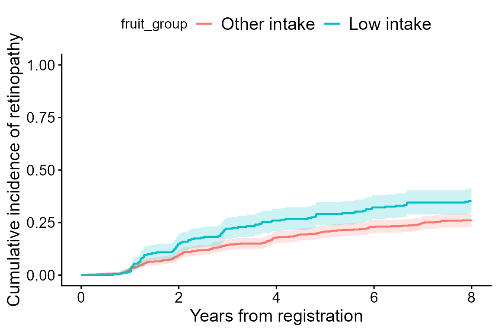
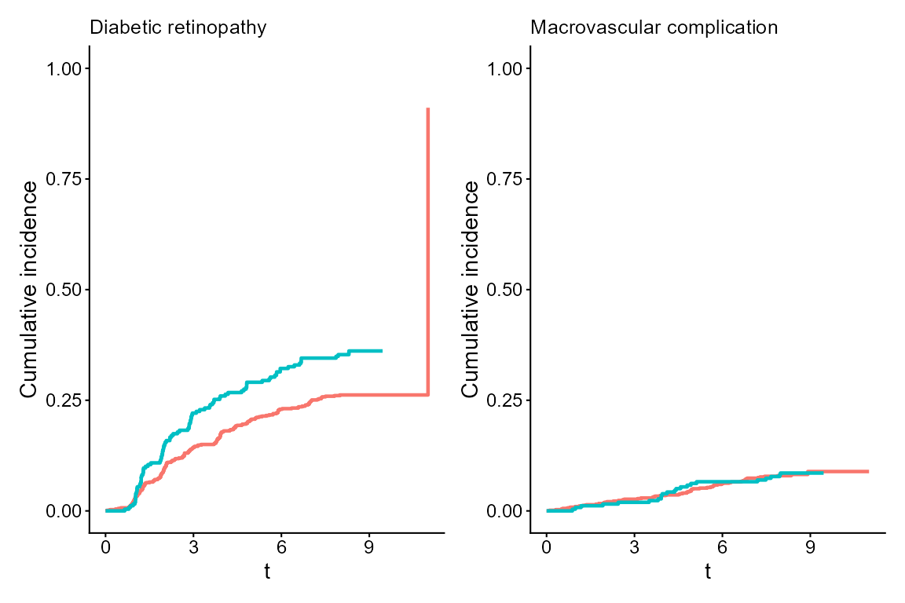
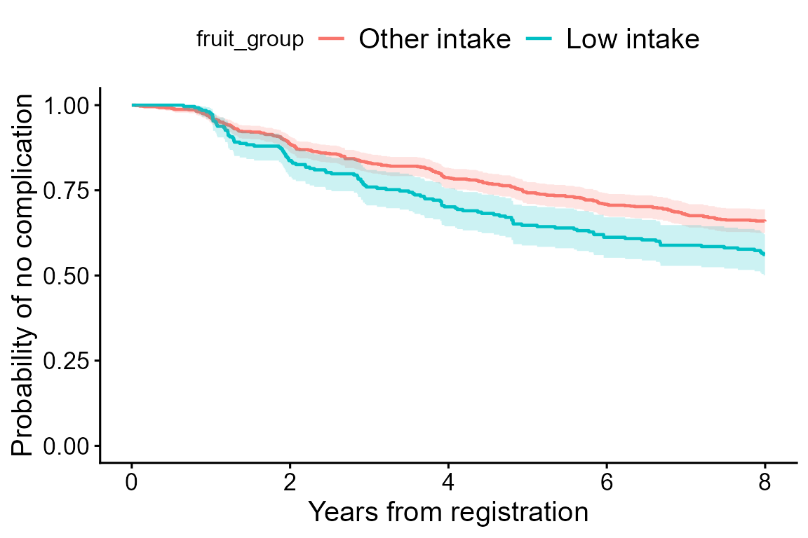

We use one dataset to answer four related questions with
cifmodeling:
- What is the probability of each complication by eight years?
- Is there evidence that the retinopathy CIFs differ between fruit-intake groups?
- How large is the eight-year risk ratio for each complication?
- What changes if the outcome is the first occurrence of either complication?
We show the main function calls and their results. Interpretation paragraphs are generated from fitted objects when the vignette is built; verification checks also run, but their code is hidden so the examples stay easy to follow. For plot styling and complete argument lists, see Gallery and Function reference.
Data and endpoints
The diabetes.complications dataset contains anonymized
observations from the Japan Diabetes Complications Study. Tanaka et
al. (2013) examined the association between fruit intake and incident
retinopathy in this cohort. We use the following variables:
| Variable | Meaning |
|---|---|
t |
Follow-up time, in years |
epsilon = 0 |
Censored observation |
epsilon = 1 |
Diabetic retinopathy (event of interest) |
epsilon = 2 |
Macrovascular complication (competing event) |
fruitq |
Quartile of fruit intake |
We compare the lowest fruit-intake quartile (Q1) with the other three
quartiles (Q2–Q4). The Overview uses the
supplied fruitq1 indicator for the same comparison. Here we
reconstruct it from fruitq: a factor for plots and tests,
and a binary variable for regression. Other intake (0)
is the reference group.
analysis_data <- diabetes.complications
analysis_data$low_fruit <- as.integer(analysis_data$fruitq == "Q1")
analysis_data$fruit_group <- factor(
analysis_data$low_fruit,
levels = c(0, 1),
labels = c("Other intake", "Low intake")
)
# Check the size of each group and the observed first-event codes.
table(
Fruit_intake = analysis_data$fruit_group,
First_event = factor(
analysis_data$epsilon, levels = c(0, 1, 2),
labels = c("Censored", "Retinopathy", "Macrovascular")
)
)
#> First_event
#> Fruit_intake Censored Retinopathy Macrovascular
#> Other intake 472 189 59
#> Low intake 144 92 22The table reports observed first-event counts, not event probabilities. Estimating cumulative incidence requires accounting for censoring and differences in follow-up. The comparisons below describe associations in observational data; they do not, by themselves, establish causal effects of fruit intake.
1. Estimate cumulative incidence
We begin with the cumulative incidence function
(CIF) of diabetic retinopathy in each group. Macrovascular
complications may occur first and prevent retinopathy from being the
first recorded event. cifcurve() therefore uses the
Aalen–Johansen estimator rather than treating competing events as
ordinary censoring.
fit_cif <- cifcurve(
Event(t, epsilon) ~ fruit_group,
data = analysis_data,
outcome.type = "competing-risk",
code.event1 = 1,
code.event2 = 2
)The eight-year estimates are obtained from
summary(fit_cif, times = 8). The table reports the event-1
CIF, rather than the complementary probability stored in the
surv column.
#> group risk_percent CI_low_percent CI_high_percent
#> 1 Other intake 26.2 23.0 29.5
#> 2 Low intake 35.3 29.6 41.2For competing-risk fits, cifcurve() stores one
minus the event-1 CIF in surv, with confidence
limits on the same complementary scale. To report a CIF interval, use
1 - upper for the lower limit and 1 - lower
for the upper limit. These are pointwise intervals for
each group—not simultaneous bands or intervals for the between-group
difference. The probability of remaining free of
both events is a different quantity (see Section 4 and
Computational formulas).
For these unweighted CIFs, the default 95% pointwise intervals use a delta-method standard error, an arcsine-square-root transformation, and a normal reference distribution. Computational formulas describes other options, including influence-function and Student-reference intervals.
Reading the estimate. At eight years, retinopathy occurred first with estimated probabilities of 35.3% in the low-intake group and 26.2% in the other-intake group. The difference between these two point estimates was +9.1 percentage points. This is a descriptive contrast, not a confidence interval or a test of the group difference.
cifplot(
fit_cif,
type.y = "risk",
add.risktable = FALSE,
add.censor.mark = FALSE,
label.x = "Years from registration",
label.y = "Cumulative incidence of retinopathy",
limits.x = c(0, 8)
)
Cumulative incidence of diabetic retinopathy by fruit-intake group
The plot displays the event-1 CIF over follow-up. To view
both competing events side by side, use
cifpanel() and swap the event codes in the second
panel:
fit_panels <- cifpanel(
formula = Event(t, epsilon) ~ fruit_group,
data = analysis_data,
outcome.type = "competing-risk",
code.events = list(c(1, 2, 0), c(2, 1, 0)),
rows.columns.panel = c(1, 2),
title.plot = c("Diabetic retinopathy", "Macrovascular complication"),
legend.collect = TRUE
)
print(fit_panels)
Cumulative incidence of both competing events
Each code.events vector lists the event of interest,
competing event, and censoring code, in that order. For panel layout,
labels, risk tables, and event marks, see Gallery.
2. Compare cumulative incidence between groups
The plots show how the groups differ descriptively, but do not test
equality of the CIFs. Use ciftest(test = "gray") for the
classical Gray test:
fit_gray <- ciftest(
Event(t, epsilon) ~ fruit_group,
data = analysis_data,
outcome.type = "competing-risk",
test = "gray"
)
fit_gray
#>
#> Gray's test
#>
#> Outcome: competing-risk
#> Test: gray
#> FH weights: rho = 0, gamma = 0
#> Analysis strata: pooled
#> Censoring strata: not used by this test
#> Working AJ strata: not used by this test
#> Variance: gray
#>
#> Chi-squared = 8.8786, df = 1, p-value = 0.002885ciftest() also provides an augmented score
test based on working event and censoring distributions. For
competing-risk outcomes, test = "auto" selects this
method:
fit_augmented <- ciftest(
Event(t, epsilon) ~ fruit_group,
data = analysis_data,
outcome.type = "competing-risk",
test = "auto"
)
fit_augmented
#>
#> Closed-form augmented Fine-Gray score test
#>
#> Outcome: competing-risk
#> Test: augmented
#> FH weights: rho = 0, gamma = 0
#> Analysis strata: pooled
#> Censoring strata: pooled
#> Working AJ strata: fruit_group only (2 fitted cells)
#> Iteration: 0 (closed-form augmentation)
#> Variance: score-iid
#>
#> Chi-squared = 7.931, df = 1, p-value = 0.004859The two tests use different scores and variance estimators, but both assess equality of the retinopathy CIF over follow-up. Neither directly estimates the eight-year RR, and a p-value does not measure the size of the group difference.
Reading the tests. The Gray test gives p = 0.00289 and the augmented score test gives p = 0.00486. At an illustrative 5% threshold, the Gray result provides evidence against equal CIFs. A non-significant result is not proof of equal CIFs. The two procedures test the same equality of CIFs but use different scores and variance estimates; their p-values should not be compared to select whichever test happens to be significant.
For early- or late-weighted scores, multiple-direction quadratic tests, and one- or two-sided max tests, see Tests of cumulative incidence functions.
3. Estimate eight-year risk ratios
To quantify the group comparison at eight years,
polyreg() jointly models both competing events and
estimates their risk ratios (RRs). This first fit gives
unadjusted (crude) RRs. The exposure is specified
separately from nuisance.model; ~ 1 indicates
that no additional covariates are included.
fit_rr <- polyreg(
nuisance.model = Event(t, epsilon) ~ 1,
exposure = "low_fruit",
data = analysis_data,
code.exposure.ref = 0,
outcome.type = "competing-risk",
time.point = 8,
effect.measure1 = "RR",
effect.measure2 = "RR"
)
summary(fit_rr)
#>
#> event1 event2
#> ----------------------------------------------
#> low_fruit, 1 vs 0
#> 1.350 1.079
#> [1.099, 1.659] [0.674, 1.728]
#> (p=0.004) (p=0.752)
#>
#> ----------------------------------------------
#>
#> effect.measure RR at 8 RR at 8
#> n.events 279 in N = 978 79 in N = 978
#> median.follow.up 8 -
#> range.follow.up [0.05, 11.00] -
#> n.parameters 4 -
#> converged.by Converged in objective function -
#> nleqslv.message Function criterion near zero -The summary() output reports fitted exposure effects. To
make the two cause-specific RRs easier to compare, the table below
extracts their 95% CIs. The extraction and validity checks run during
the build but are not shown.
#> event RR CI_low CI_high
#> 1 Retinopathy 1.35 1.10 1.66
#> 2 Macrovascular complication 1.08 0.67 1.73Each RR compares low intake with other intake for one event at eight years. A value of 1 indicates equal modeled risks; values above or below 1 indicate higher or lower risk, respectively, in the low-intake group. The joint model ensures that the event probabilities remain coherent: their sum cannot exceed one.
For Retinopathy, the estimated eight-year RR was 1.35 (95% CI 1.10<U+2013>1.66). The 95% CI does not include 1, under this model and variance estimator.
For Macrovascular complication, the estimated eight-year RR was 1.08 (95% CI 0.67<U+2013>1.73). The 95% CI includes 1; both directions of association remain compatible with the data.
A ratio formed from separately estimated AJ CIFs and an unadjusted
polyreg() RR both describe the eight-year risk comparison,
but they need not agree numerically. The estimation procedures differ in
their estimating equations, handling of censoring, and use of a joint
probability model. An RR confidence interval should not be interpreted
as an interval for the absolute risk difference.
For a more detailed model, include baseline covariates in
nuisance.model and use strata to specify how
the censoring distribution is estimated. The next code block retains the
original vignette’s fuller covariate specification. It is not
executed during the build because fitting this model can be
computationally intensive.
fit_adjusted <- polyreg(
nuisance.model = Event(t, epsilon) ~
age + sex + bmi + hba1c + diabetes_duration +
drug_oha + drug_insulin + sbp + ldl + hdl + tg +
current_smoker + alcohol_drinker + ltpa,
exposure = "low_fruit",
strata = "strata",
data = analysis_data,
code.exposure.ref = 0,
outcome.type = "competing-risk",
time.point = 8,
effect.measure1 = "RR",
effect.measure2 = "RR"
)
summary(fit_adjusted)Here strata determines the censoring-weight strata, not
the exposure groups. Differences from the unadjusted fit may reflect
both covariate adjustment and the censoring model. Causal interpretation
additionally requires appropriate confounding and censoring assumptions.
See Direct polytomous regression for model
details and other effect measures, and Reporting results for formatted
tables.
4. Consider a combined survival endpoint
We now consider time to the first complication of either
type. For this composite endpoint, both retinopathy and
macrovascular complications count as events.
cifcurve(outcome.type = "survival") estimates the
probability of remaining free of either complication using KM, rather
than estimating a cause-specific CIF.
analysis_data$any_complication <- as.integer(analysis_data$epsilon %in% c(1, 2))
fit_survival <- cifcurve(
Event(t, any_complication) ~ fruit_group,
data = analysis_data,
outcome.type = "survival"
)
fit_logrank <- ciftest(
Event(t, any_complication) ~ fruit_group,
data = analysis_data,
outcome.type = "survival",
test = "logrank"
)
fit_logrank
#>
#> Log-rank test
#>
#> Outcome: survival
#> Test: logrank
#> FH weights: rho = 0, gamma = 0
#> Analysis strata: pooled
#> Censoring strata: not used by this test
#> Working AJ strata: not used by this test
#> Variance: hypergeometric
#>
#> Chi-squared = 8.6943, df = 1, p-value = 0.003192summary(fit_survival, times = 8) gives the eight-year KM
survival probability. The following table shows its complement: the risk
of either first complication.
#> group event_free_percent any_complication_percent CI_low_percent
#> 1 Other intake 65.8 34.2 30.7
#> 2 Low intake 56.1 43.9 37.9
#> CI_high_percent
#> 1 37.7
#> 2 50.0The KM estimate at eight years is the probability of having experienced neither complication; its complement is the probability that at least one has occurred. The log-rank test compares event-free survival across follow-up, not the risk at eight years alone.
Reading the composite endpoint. The estimated eight-year probability of either first complication was 43.9% in the low-intake group and 34.2% in the other-intake group. This combines two event types and should not be interpreted as the risk of retinopathy alone.
cifplot(
fit_survival,
add.risktable = FALSE,
add.censor.mark = FALSE,
label.x = "Years from registration",
label.y = "Probability of no complication",
limits.x = c(0, 8)
)
Probability of remaining free of either complication
The composite risk is related to the two cause-specific CIFs by
A second AJ fit lets us check this identity numerically. It also shows why the retinopathy CIF alone is not the complement of event-free survival.
fit_macro <- cifcurve(
Event(t, epsilon) ~ fruit_group,
data = analysis_data,
outcome.type = "competing-risk",
code.event1 = 2,
code.event2 = 1
)The table compares the sum of the two AJ CIFs with the complement of the KM event-free survival estimate, using the same groups and time point.
#> group sum_of_CIFs_percent composite_risk_percent
#> 1 Low intake 43.9 43.9
#> 2 Other intake 34.2 34.2The two calculations should agree up to rounding when they use the same first-event definitions, population, and follow-up. This identity does not mean that the composite RR is an average or sum of the event-specific RRs.
Finally, polyreg() can estimate the eight-year RR for
the composite risk. This is a different estimand from
either cause-specific RR.
fit_composite_rr <- polyreg(
nuisance.model = Event(t, any_complication) ~ 1,
exposure = "low_fruit",
data = analysis_data,
code.exposure.ref = 0,
outcome.type = "survival",
time.point = 8,
effect.measure1 = "RR"
)
summary(fit_composite_rr)
#>
#> event 1 (no competing risk)
#> ----------------------------------
#> low_fruit, 1 vs 0
#> 1.287
#> [1.084, 1.528]
#> (p=0.004)
#>
#> ----------------------------------
#>
#> effect.measure RR at 8
#> n.events 358 in N = 978
#> median.follow.up 8
#> range.follow.up [0.05, 11.00]
#> n.parameters 2
#> converged.by Converged in objective function
#> nleqslv.message Function criterion near zero#> RR CI_low CI_high
#> 1 1.29 1.08 1.53Reading the final RR. Low versus other fruit intake had an estimated eight-year RR of 1.29 (95% CI 1.08<U+2013>1.53) for either first complication. Unlike the retinopathy RR, this effect includes macrovascular first events.
Take-home messages
The AJ CIF estimates the probability that a
specified event occurs first by a given time. Gray and augmented
score tests compare CIFs across follow-up without estimating a
fixed-time effect size. The polyreg() RR
quantifies a fixed-time risk comparison in a coherent model of competing
events. For the composite endpoint, the KM survival
curve instead estimates the probability of remaining free of
both complications. These quantities are related, but not
interchangeable.
Where to go next
- Direct polytomous regression explains the joint model and RR, OR, and SHR options.
- Tests of cumulative incidence functions covers temporal weights and multiple-direction tests.
- Computational formulas documents variance and confidence-interval methods.
- Gallery shows plot customization; Reporting results shows publication-ready tables.
References
- Tanaka S, Yoshimura Y, Kawasaki R, Kamada C, Tanaka S, Horikawa C, Ohashi Y, Araki A, Ito H, Akanuma Y, Yamada N, Yamashita H, Sone H, for the Japan Diabetes Complications Study Group. Fruit intake and incident diabetic retinopathy with type 2 diabetes. Epidemiology. 2013;24(2):204–211. doi:10.1097/EDE.0b013e318281725e.